Seward to Nome —
the trail for
all seasons
America’s only winter National Historic Trail: 2,400 miles of trails linking Alaska Native travel routes, gold-rush roadhouses and the communities that still depend on them.
Photo: Kevin Keeler, BLM (public domain)
Announcements
This is the
Iditarod Trail
Not one path but a system of winter trails — some first worn by Alaska Native travelers, others blazed for the gold rush, all of them still in use. Here it is in four parts.
A trail for
every season
Mushers, skiers, riders and hikers share the Iditarod with village residents traveling to hunt, fish, trade and visit.
Dog mushing
Winter & summer trails
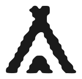
Shelter cabins & camping
River travel in summer
Subsistence & village travel
Wildlife watching
Crow Pass & the Chugach
Tidewater
to tundra
From Resurrection Bay over the Chugach and the Alaska Range, across the Interior and the Yukon to the Bering Sea coast at Nome.
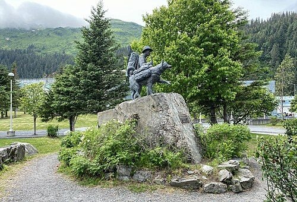
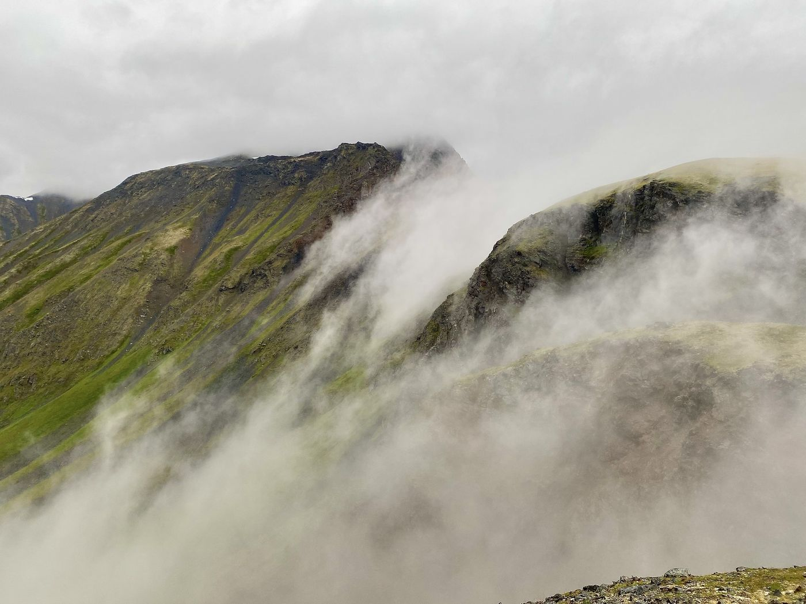
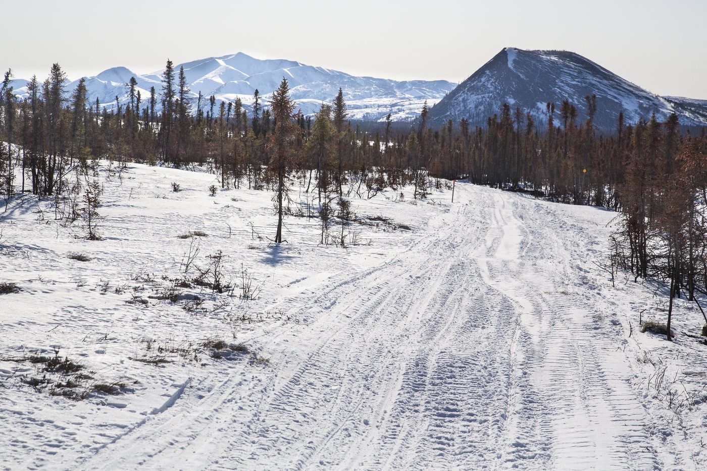
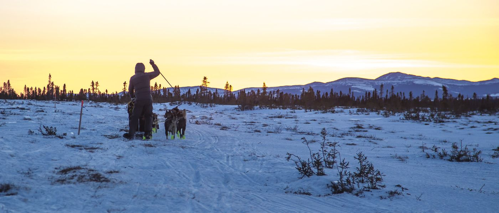
Where the
trail runs
A thousand miles of main trail and 1,400 miles of connecting trails, crossing the lands of ten public managers and many private owners.
- Kenai PeninsulaSeward · Moose Pass
- Cook InletGirdwood → Skwentna
- Alaska RangeRainy Pass · Rohn
- Kuskokwim & InnokoMcGrath → Iditarod
- YukonKaltag
- Norton SoundUnalakleet → Nome
Main trailAbout 1,000 miles, Seward to Nome
Travel it stop by stopRoute shown is approximate, after BLM. Imagery © Esri.
The last great
gold rush trail
“If you love the grandeur of nature … then take the trip by all means; you will not be disappointed.” — C. K. Snow, Seward, 1919
The communities
on the trail
Local Trail Blazers groups, village and Tribal governments and volunteers mark, clear and travel the trail every winter.
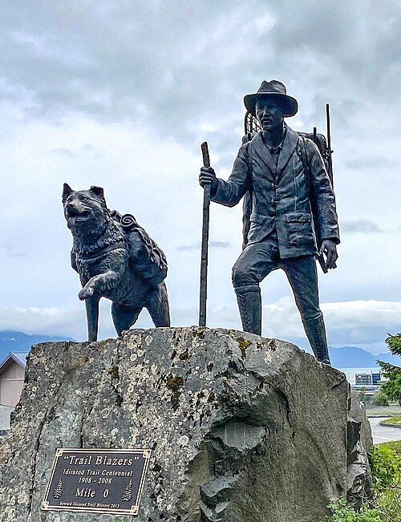
Seward — where the trail begins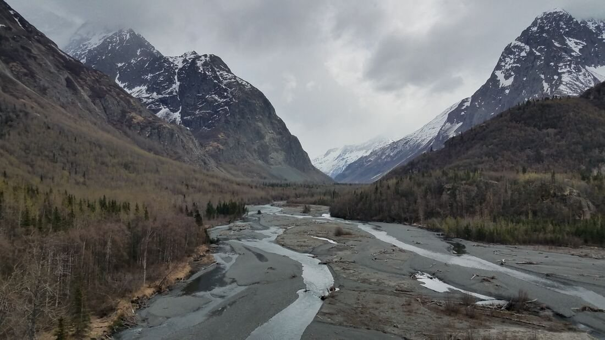
Eagle River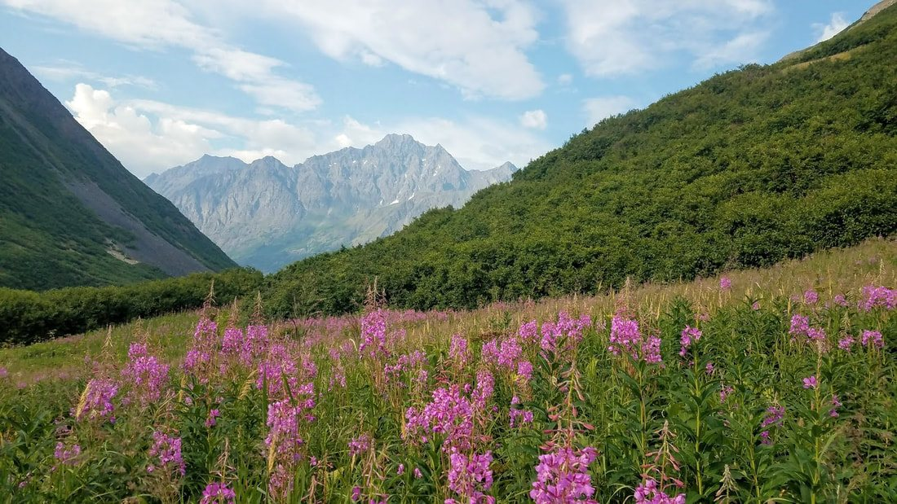
Eklutna, a Dena’ina village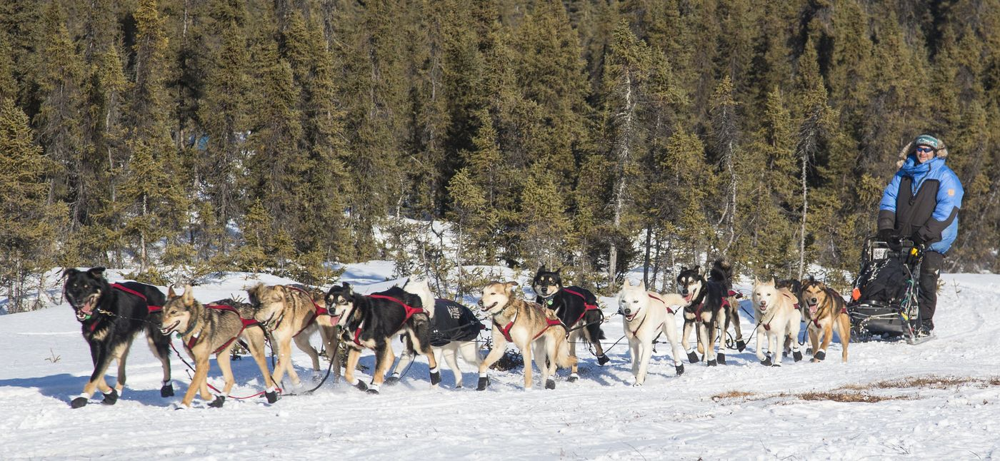
Knik — mushing heritage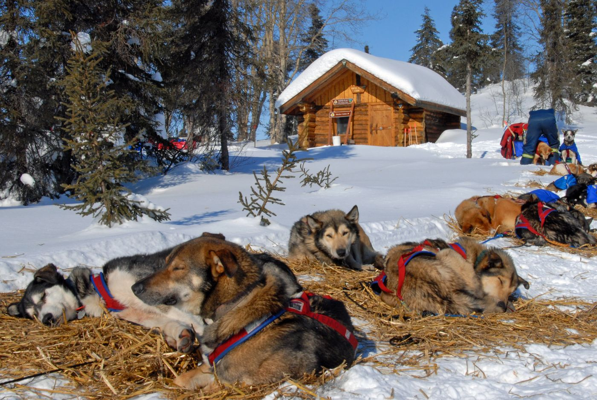
McGrath, on the Kuskokwim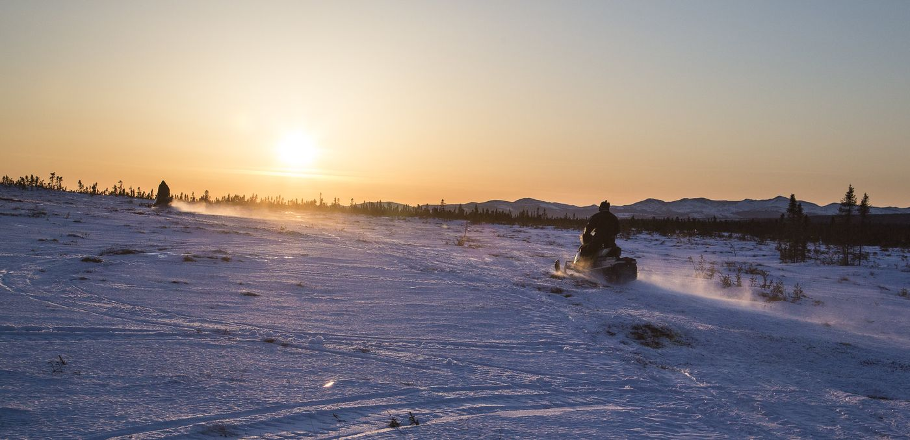
Unalakleet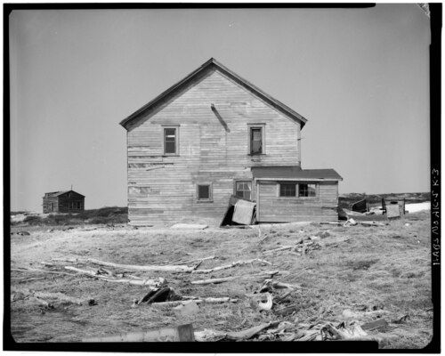
Solomon RoadhouseFrom the
trail store
Books, patches, pins and Jon Van Zyle’s commemorative poster. Every purchase supports the trail.

Van Zyle poster

Trail patch

Books & DVD
Before
you go
Most of the Iditarod is remote winter country. A few rules keep you, the trail and its history safe.
Keep the
trail open
The Alliance is small and volunteer-powered. Members, donors and trail crews make the work possible.
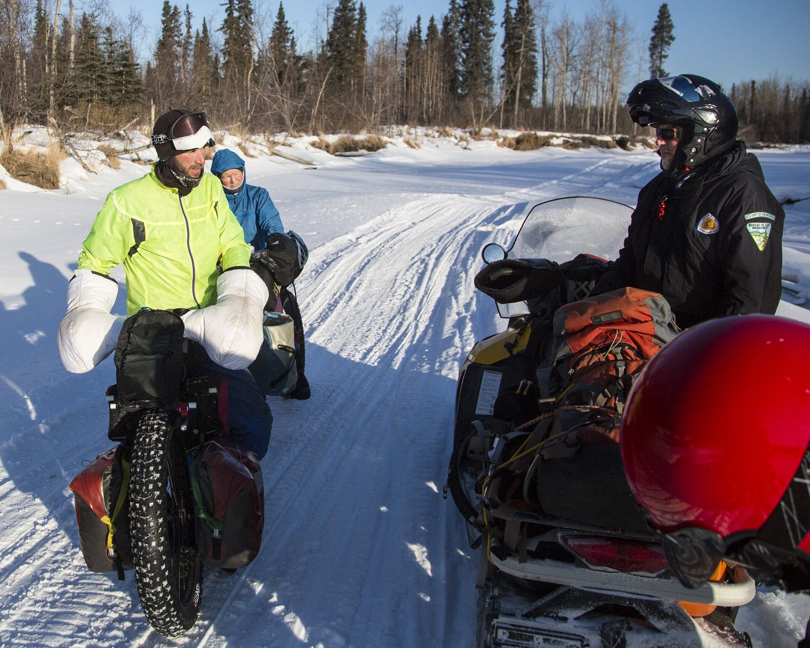
Donate
Fund waymarking, education and community grants.
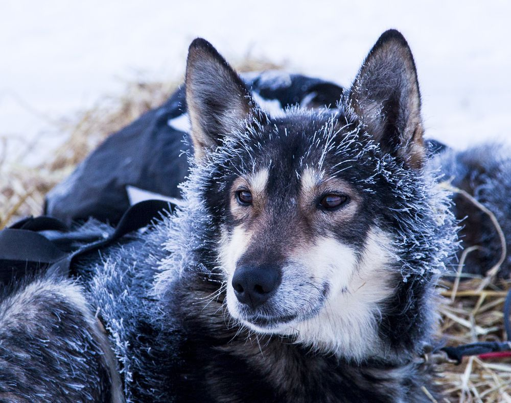
Become a member
From $10 a year, with The Tripod newsletter.
Passport stamps
Collect all nine, from Seward to Nome.
Contact us
Questions about the trail, membership or a partnership? We are happy to help.
Anchorage, AK 99503-5774
Trail conditions
Contact the land manager for the section you plan to travel.